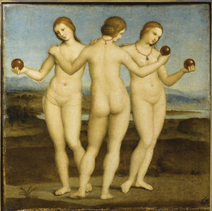
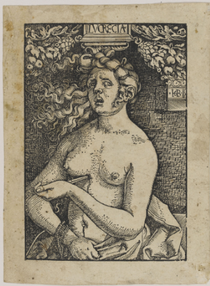
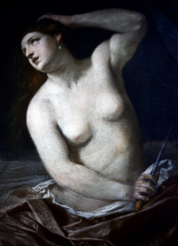

L’Idéalisation et l'érotisation de Lucrèce de Hans Baldung Grien
Ayda Duru Demirtaş
Hans Baldung Grien
Hans Baldung Grien est né vers 1484-1485. Il vient d'une famille bourgeoise, son père étant l’avocat de l’évêque de Strasbourg. Hans fut le seul membre de la famille Baldung à ne pas devenir avocat ou entrer au service d’un prince. Il choisit de se consacrer à la peinture et, en 1503, il rejoignit l’atelier d’Albrecht Dürer. Durant son apprentissage, il réalisa des vitraux, des retables, des gravures, etc.
Grâce à son apprentissage chez Dürer et aux connaissances qu’il a acquises dans son atelier, il atteignit un niveau de vie confortable à son retour à Strasbourg en 1509. Quelques années plus tard, il reçut la commande d’un retable à Fribourg-en-Brisgau, composé de 11 panneaux représentant la vie de la Vierge : L’Annonciation, La Visitation, La Nativité, La Fuite en Égypte, La Crucifixion, etc.
Sa carrière, située dans la première moitié du XVIe siècle, se place entre deux mondes : le catholicisme et le protestantisme ; le monde médiéval, où l’érotisme est associé au mal et au “péché originel”, et le monde moderne, où la représentation des corps nus est destinée à susciter un plaisir visuel érotique. Il s’est peut-être inspiré de l’humanisme de son époque, puisque sa famille était proche des intellectuels humanistes. Son traitement de la forme humaine était exagéré et excentrique, un style que l’on appelle le maniérisme dans l’histoire de l’art.
Outre les sujets religieux traditionnels, qu’ils soient catholiques ou protestants, Baldung s’intéressait aux thèmes profanes. Ses œuvres se distinguent de celles de la Renaissance par leur éloignement du style de son maître, Dürer. Elles se caractérisent par une force sauvage et fantastique, abordant des thèmes comme l’imminence de la mort et la relation entre les sexes, ce qui montre son non-conformisme. Ses œuvres les plus caractéristiques dans ce domaine sont des compositions à petite échelle, souvent énigmatiques, souvent érotiques, allégoriques et mythologiques. Lucrèce est l'une de ces œuvres profanes et érotiques, où l’on peut même déceler des traces de symbolisme chrétien.
L’histoire Canonique Chez Tite-Live
Lucrèce, fille de Spurius Lucretius, était l’épouse de Lucius Tarquin Collatin. Un jour, lors d’un dîner, Sextus Tarquin, Tarquin Collatin et quelques autres hommes débattaient pour savoir qui avait la femme la plus vertueuse. Collatin, étant sûr que sa femme était la plus exemplaire, voulut le prouver en les amenant chez lui pour leur faire découvrir Lucrèce. Là, ils trouvèrent Lucrèce en train de “filer de la laine” (Tite-Live), ce qui confirma immédiatement la victoire de Collatin.
Quelques jours plus tard, Sextus Tarquin revint chez Collatin sans y être invité. “Brûlant de désirs”, il entra dans la chambre de Lucrèce endormie, la réveilla et la menaça, promettant de la tuer si elle tentait de crier. Cependant, Lucrèce n’avait pas peur de la mort et résista. Tarquin la menaça alors de la tuer avec son esclave et de prétendre qu’elle avait commis un adultère avec lui, ce qui constituait le pire des crimes à cette époque ; c’est pour cette raison qu’elle obéit à Tarquin.
Après son départ, Lucrèce convoqua son père et son époux, qui vinrent chacun avec un ami fidèle, dont l’un était Brutus (qui mènera la révolte mettant fin à la royauté romaine). À leur arrivée, Lucrèce, désespérée, leur raconta tout et leur fit promettre de la venger. C’est alors qu’elle se planta un poignard dans le cœur en criant : “Désormais que nulle femme, survivant à sa honte, n'ose invoquer l'exemple de Lucrèce !”
Brutus proclama alors qu’ils tueraient Sextus Tarquin et ne permettraient plus à la lignée de Tarquin le Superbe de régner sur Rome. Ils portèrent le corps de Lucrèce sur la place publique, et les Romains, frappés par cette scène tragique, se révoltèrent sous l’impulsion du discours de Brutus, qui relata le viol de Lucrèce et les despotismes de Tarquin le Superbe. Ainsi, les Romains chassèrent la dynastie des Tarquins. À ce moment, le récit de Lucrèce prit fin et, après une guerre, le règne de Tarquin le Superbe s’acheva, marquant la fin de la royauté romaine et la fondation de la République romaine. Tarquin Collatin et Brutus devinrent les premiers magistrats de la République romaine.
Néanmoins, on remarque que, dans presque tous les tableaux représentant Lucrèce, cette femme innocente, chaste, victime du viol par Sextus Tarquin, est souvent érotisée : elle est généralement représentée semi-nue (avec les seins et le bas du corps découverts), avec une expression évoquant presque l’extase. De plus, l’exemple de Lucrèce est devenu une allégorie de la chasteté et de la fidélité conjugale, malgré les éléments érotiques de son histoire.
Cela est particulièrement visible dans le tableau de Hans Baldung Grien intitulé Lucrèce, conservé au musée Städel à Francfort. Peint en 1520 sur un papier coloré afin de fournir une teinte moyenne contre laquelle le peintre joue avec le clair-obscur, la composition donne un effet presque sculptural et tridimensionnel, Grien étant l’un des maîtres de cette technique. Le choix de ce papier est intéressant, car il met en valeur l’ombre et la lumière dans la composition, accentuant ainsi le contraste entre la souillure du corps de Lucrèce et la vertu de son âme.
À partir de ce point, on commence à comprendre que Lucrèce est fortement érotisée : le drap ne sert que de voile à une pudeur superficielle, éveillant le désir du spectateur et suggérant presque que Lucrèce n’est pas aussi innocente qu’on pourrait le croire. Pourtant, les premiers récits du mythe insistent sur son caractère chaste et innocent.
En quoi la figure de Lucrèce, présentée comme une femme vertueuse et pure dans l’Antiquité, devient-elle, à la Renaissance, une figure idéalisée et érotisée, oscillant entre objet du désir et symbole de la vertu féminine, comme l’illustre le tableau de Hans Baldung Grien ?
Dans un premier temps, j’analyserai comment la figure de Lucrèce incarne la vertu féminine, l’innocence, la chasteté et, au-delà, la figure de la protomartyre, se rapprochant, chez Hans Baldung, des figures du Christ. Ensuite, j’examinerai comment cette figure se transforme en objet de désir, victime de la société patriarcale, érotisée en tant que femme païenne, étrangère, dans les collections des amateurs d’art. Enfin, je montrerai comment, en accomplissant un acte jugé masculin, elle devient une héroïne et acquiert le statut de “fondatrice” de la République.
I. LE SYMBOLE DE LA VERTU
Un idéal de la chasteté romaine
L’Histoire de Tite-Live, où l’on raconte celle de Lucrèce, la montre pour la première fois en train de travailler la laine avec ses servantes, lorsqu’elle est aperçue par les amis de Tarquin Collatin. C’est à ce moment que Sextus Tarquin, saisi par la beauté et la vertu de Lucrèce, commence à brûler de désirs coupables. Le lien entre la vertu féminine et le travail de la laine dans la Rome antique se manifeste clairement dans ce passage. Il renvoie à l’idéal gréco-romain de la “femme au foyer”. Le rituel du travail de la laine, d’abord une nécessité économique, devient ensuite symbolique.
Pour Tite-Live, il est important de souligner que Lucrèce n’avait pas peur de la mort et qu’elle a d’abord refusé cet homme tyrannique. Mais après que Sextus Tarquin l’a menacée de l’accuser d’avoir commis l’adultère avec son esclave, elle lui obéit, craignant avant tout pour sa réputation. Cette terrible perspective – être accusée d’avoir été prise avec un esclave – la pousse à céder, car sa chasteté résolue (que Tite-Live appelle obstinata pudicita) ne pourrait alors jamais être rétablie. Il faut comprendre que ce n’est pas la peur de la mort ni la brutalité du viol qui la submerge, mais bien la crainte du jugement social. Ainsi, elle sacrifie sa pudicita pour ne pas souiller son honneur.
Seul son corps a été violé, et sa mort deviendra un témoignage de son âme « innocente ». Elle sent qu’elle doit se punir pour qu’aucune femme impudique ne puisse, à l’avenir, invoquer son exemple comme justification. Ce point est souligné dans ses derniers mots : “Désormais que nulle femme, survivant à sa honte, n'ose invoquer l'exemple de Lucrèce !”
Dans les Fastes, Ovide raconte l’histoire de Lucrèce en intensifiant la sympathie du lecteur pour elle. Il la présente comme inconsciente et la compare à un agneau face au loup lorsque Tarquin s’approche d’elle, une épée à la main. Cette comparaison renforce l’image de Lucrèce en victime sans défense et celle de Tarquin en prédateur impitoyable.
Au Moyen Âge, Christine de Pizan, dans La Cité des dames, propose une interprétation différente de l’histoire de Lucrèce, celle d’une autrice féminine. Pour elle, Lucrèce est un exemple qui réfute ceux qui prétendent que les femmes “veulent être violées”. Selon Pizan, Lucrèce est incapable de se libérer du tourment et de la douleur de ce qu’elle a subi ; elle devait se suicider pour se conformer aux attentes sociales de son époque, prouvant ainsi son innocence.
De plus, dans la peinture de Grien, on remarque une référence subtile à la statuaire antique. Les pieds de Lucrèce rappellent ceux des Trois Grâces de Raphaël, avec un effet de mouvement suspendu : le poids de son corps repose sur la jambe droite, tandis que son pied gauche est légèrement levé. Ces détails soulignent l’aspect chaste et spirituel de Lucrèce, tandis que le contrapposto et les proportions harmonieuses évoquent la sculpture antique.
Figure de suicide ou du martyre?
Les représentations visuelles du suicide reflètent l’attitude morale de leur époque. Depuis l’Antiquité, ces représentations distinguent les formes « hautes » et « basses » de la mort volontaire. Le suicide et le martyre étaient classés en catégories morales binaires, opposées l’une à l’autre.
Depuis la Renaissance, les personnages féminins dominent les représentations du suicide. À l’époque de la Haute Renaissance, les héroïnes féminines tragiques au bord du suicide étaient particulièrement popularisées. Cependant, l’image du suicide dans les traditions de la Renaissance oscille entre glorification et stigmatisation, esthétisation et sanctification. Le suicide est souvent représenté comme une tragédie, incarnant soit un chemin vers la vertu et la gloire, soit une fin convenable pour un personnage moralement compromis.
Pourtant, dans ces mêmes traditions, les héroïnes vertueuses comme Lucrèce deviennent paradoxalement l’incarnation de la faiblesse féminine. Par l’abondance des représentations féminines, un lien s’est créé entre le suicide et la féminité, ainsi qu’entre le suicide et la prédominance des émotions. Le désespoir coupable, qui, au Moyen Âge, culminait dans le suicide, a été ravivé avec la Contre-Réforme. Le suicide était alors rationalisé comme un péché auquel la femme, membre du “sexe faible”, était supposée plus encline.
Bien sûr, le récit de Lucrèce ne se réduit pas à celui d’une mort volontaire ; c’est d’abord l’histoire d’un viol, celui d’une femme noble par un homme de sang royal. Ce viol conduit au suicide. Or, la plupart des représentations du suicide de Lucrèce dans l’art de la Renaissance montrent une femme vivante au moment de se donner la mort, une figure alliant vertu et beauté qui se détruit elle-même. Lucrèce met fin à ses jours, ce qui en fait un modèle de suicide et non de martyre. Cependant, son histoire renvoie à la loi primitive sous la Rome archaïque, avant l’établissement de la République. Elle devient ainsi une sorte de conte moral illustrant les sacrifices extrêmes auxquels se sont livrées les femmes chastes pour défendre leur honneur.
De ce fait, Lucrèce devient une figure de “protomartyre” (définition du CNRTL : “premier des martyrs”). Alors que le suicide est un péché odieux dans le christianisme, les Pères de l’Église ne condamnent pas la mort de Lucrèce. Anciens et chrétiens s’accordent sur le fait que la chasteté d’une femme est un trésor plus précieux que sa propre vie. Pour cette raison, Lucrèce est devenue, pour les chrétiens, l’une des femmes illustres, païennes et chrétiennes, exemplaires en matière de chasteté.
Saint Jérôme, par exemple, écrit dans son traité Contre Jovinien, au sujet de Lucrèce : “ne voulant pas survivre à sa pudeur violée, elle effaça de son propre sang la tache faite à son corps.” Tertullien, dans son Exhortation à la chasteté, affirme que Lucrèce “lava dans son propre sang la souillure imposée à sa chair” et en fait un exemple païen de chasteté. Même s’il estime que Lucrèce s’est suicidée davantage pour sa gloire que pour sa chasteté — une interprétation qui ne tient pas compte des lois de la Rome antique —, sa mort courageuse reste une source d’inspiration en matière de martyre.
Lucrèce et le Christ
Au-delà des interprétations chrétiennes qui situent Lucrèce comme une figure protomartyre, deux gravures xylographiques de Hans Baldung Grien établissent un parallèle entre la figure du Christ et celle de Lucrèce. Il s’agit d’une représentation à mi-corps du Christ en Homme de douleurs et d’une Lucrèce, également dévêtue à mi-corps, en train de se donner la mort.

Ces deux œuvres appartiennent à un groupe de six xylographies de même format, mesurant 12,8 cm de haut et 8,8 cm de large, datées entre 1511 et 1513, à l’exception de Lucrèce, qui date des années 1519-1520. La gravure du Christ est une image de dévotion qui “s’inscrit traditionnellement dans un contexte de piété privée et se décline sous la forme d’un ou plusieurs personnages dépeints à mi-corps, pris dans un close-up sur fond noir ou neutre, dans le souci d’entrer en un dialogue immédiat avec le spectateur. Il s’agit de générer un climat d’intimité profonde et d’accentuer la capacité d’absorption émotionnelle du motif représenté en l’isolant par exemple de son contexte narratif, favorisant ainsi l’empathie du spectateur” (Riedmatten, p. 226).
Le format de l’image du Christ est repris dans la gravure de Lucrèce. Sa chevelure torsadée rappelle la couronne d’épines du Christ. Elle présente également un visage souffrant : bien que le Christ soit représenté mort tandis que Lucrèce est encore vivante, sa bouche est entrouverte de douleur et ses sourcils sont froncés. Ses bras sont croisés de la même manière que ceux du Christ, l’un tenant le poignard et l’autre agrippant sa robe, dans un geste de Venus pudica, qui dissimule l’aspect érotisé de son histoire, sans ornement ni sensualité. La lame perce le centre de sa poitrine, et un jet de sang s’en échappe. Ce sang rejoint le nombril et descend jusqu’au pubis, reliant symboliquement les deux zones de violence subie par son corps : le suicide et le viol. Cette connexion entre la crucifixion du Christ et la circoncision, préfigurée par l’écoulement du sang, renforce le rapprochement symbolique entre Lucrèce et le Christ, soulignant le sacrifice de chacun.
Toutefois, bien que cette gravure mette en avant la vertu et le caractère martyrisé de Lucrèce, elle la maintient également dans un statut d’objet, incarnant toujours un désir latent du spectateur dans le dessin de Hans Baldung.
II. L’OBJET DU DÉSIR
Le Suicide de Lucrèce: Victime d’une Société Patriarcale
Les héroïnes de la Renaissance ont contribué au discours sur le suicide en tant que figures païennes sexualisées d’une société patriarcale, souvent représentées nues, contrairement aux représentations modernes des femmes chrétiennes qui les montrent vêtues. Cette nudité crée une distance entre ces héroïnes et le spectateur.
Au Moyen Âge, Augustin, dans De Civitate Dei Contra Paganos, s’interroge sur les raisons qui ont poussé Lucrèce à se punir alors que c’est Tarquin qui l’a violée et qu’elle n’a, selon lui, rien fait d’impudique. Pour Augustin, il y a une union des corps, mais pas nécessairement des âmes. Dans l’histoire, Lucrèce apparaît chaste tandis que Tarquin, seul, est adultère. Il soutient que, pour se suicider, il faut nécessairement être coupable. Il écrit : “le corps ne perd pas sa sainteté, fût‑il violenté, tant que l’âme garde la sienne”, distinguant clairement le viol de l’adultère.
Puisque Sextus Tarquin a simplement été exilé alors que Lucrèce s’est donné la mort, Augustin déclare : “Or, s’il n’y a pas d’impudicité à être violenté contre son gré, il n’y a pas de justice à être puni pour sa chasteté”. Il rappelle la loi chrétienne : “Tu ne tueras pas” ; ainsi, pour lui, le suicide de Lucrèce est un homicide, Lucrèce étant la meurtrière d’elle-même.
Augustin arrive à la conclusion que Lucrèce s’est suicidée parce qu’elle aurait, d’une certaine manière, “consenti” à la relation sexuelle avec Tarquin, consciente de ce qui se passait tout en agissant comme si elle était innocente. Par conséquent, elle aurait ressenti le besoin de se punir à cause de sa conscience et de sa culpabilité, et sa mort aurait été le seul moyen d’expier ce péché. Il explique :
“Peut-être, il est vrai, n’est-elle pas là [aux enfers parmi les innocents qui se sont donné la mort], parce qu’elle s’est tuée non pas innocente, mais consciente d’avoir mal agi? Supposons, en effet, une chose qu’elle seule pouvait avoir : Bien que le jeune homme l’ait assaillie avec violence, n’a-t-elle pas consenti, séduite elle aussi par son propre plaisir et, pour s’en punir, a-t-elle regretté sa faute au point de vouloir l’expier par la mort? Certes, même en ce cas, elle n’aurait pas dû se tuer, si elle avait pu faire devant ses faux dieux une féconde pénitence. D’ailleurs en ces conditions, il n’est plus vrai “qu’ils furent deux et qu’un seul commit l’adultère.” Il faut dire plutôt que tous les deux furent adultères, l’un par sa violence ouverte, l’autre par son consentement caché.”
Dans la pensée chrétienne d’Augustin, Lucrèce est forcément coupable : soit elle a consenti au viol et s’est tuée par culpabilité, soit elle n’a pas consenti et s’est suicidée pour acquérir la gloire d’être considérée comme un modèle de chasteté. Pour elle, il ne suffisait pas d’être chaste, elle devait aussi paraître chaste aux yeux des autres. Augustin se distancie de Lucrèce, la dépeignant comme une étrangère, en insistant sur sa différence religieuse : “ses faux dieux”.
Il pose la question : “Si elle est adultère, pourquoi est-elle louée ? Si elle est chaste, pourquoi s’est-elle tuée ?” Pour Augustin, Lucrèce n’est plus une femme violée qui, par sa pudeur, se suicide pour préserver sa réputation et éviter d’être utilisée comme exemple par d’autres femmes désirant commettre l’adultère. Elle devient une femme doublement coupable : d’une part, elle est pécheresse pour avoir cédé à son agresseur, acceptant ainsi une forme d’immoralité et d’adultère ; et d’autre part, elle est pécheresse pour s’être donné la mort, ce qui constitue l’un des plus grands crimes du christianisme.
On remarque que l’interprétation d’Augustin est antithétique à celle de Christine de Pizan. En effet, cette vision, fréquente au Moyen Âge, ne se limite pas à Lucrèce mais s’applique à toutes les figures de femmes violées, servant, consciemment ou non, à leur érotisation. D’objets de contemplation morale et philosophique, ces figures deviennent des tentatrices, des séductrices, qui prétendent jouer le rôle de “femmes vertueuses” pour séduire les hommes.
Érotisation de la Mort Tragique de Lucrèce
Au début du XVIe siècle, la redécouverte d'une statue d’Aphrodite dans les ruines du Trastevere suscite un nouvel intérêt. On croyait alors que cette statue représentait en réalité une ancienne Aphrodite, établissant ainsi une connexion entre les deux figures. À partir de ce moment, on assiste à une véritable érotisation de Lucrèce dans les arts visuels, où l’appropriation de traits d’Aphrodite apporte une charge érotique à cette figure chaste, à l’aube de la mort.
À la Renaissance, alors que les modèles féminins se multiplient, le suicide est souvent associé à la folie, à la luxure et à la mélancolie. Les héroïnes suicidaires sont d'abord représentées avec un sein nu, symbole de la sécularisation du corps féminin. Ce corps passe ainsi d’un symbole religieux à un signe érotique. La représentation du suicide vertueux et celle du suicide des prostituées sont liées ; la déviation de l’idéal féminin, associée à la faiblesse, à la chute et à la culpabilité, est mise en avant. Pour la prostituée, le suicide devient une leçon morale, un dernier recours pour se racheter.
Bien qu'Augustin et d’autres reconnaissent que Lucrèce n’était pas une prostituée, certains éléments visuels des peintures, comme celle de Hans Baldung Grien, suggèrent cette influence. Par exemple, les cheveux de Lucrèce sont lâchés et sauvages, ce qui accentue le dynamisme de la scène. Cependant, dans le contexte romain, cela évoque une perte de pureté et de dignité. Les cheveux étaient souvent associés à la modestie et à l’honneur des femmes ; les voiles protégeaient les femmes des sollicitations et symbolisaient la dignité et la modestie sexuelles des femmes mariées. De plus, les vittae, ces rubans de laine qui retenaient les cheveux des femmes mariées, étaient des signes de pureté et faisaient partie de la tenue d'une matrone. Que Lucrèce soit représentée avec les cheveux dénoués souligne ainsi une perte de pureté et d’honneur.
Diane Wolfthal note un érotisme croissant dans la tradition artistique de la Renaissance concernant le viol et le suicide de Lucrèce : “Reflétant les changements qui se produisent dans l’art nord-européen à partir de la fin du XVe siècle, les femmes sont de plus en plus dépeintes comme des séductrices. Même les modèles de chasteté sont devenus des tentatrices. Lucretia, parangon traditionnel de vertu, est également transformée en objet sexuel à moitié nu.” Ainsi, Lucrèce passe d’un symbole de vertu à un objet sexuel, son association avec la féminité, la sexualité et le suicide reflétant les opinions sur le suicide comme lié à la luxure et à l’hystérie.
Hans Baldung, connu pour ses représentations érotiques des corps nus, notamment féminins, crée un véritable culte de la beauté dans ses œuvres, qu’il s’agisse d’Ève, de déesses antiques, de sorcières ou de séductrices. Souvent, ces figures de jeunes femmes sont confrontées au memento mori, la menace inévitable de la mort, incarnée par des squelettes. Dans la représentation de Lucrèce, la mort et l’érotisation de la jeune femme sont mises en avant. Bien que Tite-Live et d’autres auteurs anciens la décrivent comme vêtue modestement, Baldung la montre semi-nue, exposant ses seins et son sexe.
Georges Bataille, dans Les Larmes d’Éros, écrit à propos des peintures de Baldung Grien : “C’est à la mort – à l’image d’une mort toute-puissante, qui nous terrifie, mais nous entraîne dans le sens de l’enchantement lourd d’effroi de la sorcellerie, c’est à la mort, à la pourriture de la mort, ce n’est pas à la douleur, que Baldung Grien lia l’attrait de l’érotisme.” Cette conception de l’érotisme et de la mort est particulièrement présente ici.
Il faut remarquer que la conception de l’érotisme et de la mort de Bataille est tout à fait représentée ici. Bataille définit l’érotisme comme : “l’approbation de la vie jusque dans la mort.” Il écrit : “La vue ou l’imagination du meurtre peut donner, au moins à des malades, le désir de la jouissance sexuelle.” Pour Bataille, l’érotisme est indissociable de la mort : l’orgasme et le meurtre, la jouissance et la mort sont liés. Dans tous ces cas, il y a une forme de violence faite au corps humain, qu’elle soit amoureuse ou meurtrière. La violence implique toujours une pénétration, qu’il s’agisse d’un viol, d’un meurtre ou d’un désir ; il y a une déchirure de l’intériorité.
Pour un observateur contemporain, voir une figure féminine chaste, violée et érotisée dans l’art met en lumière l’indissociabilité de la mort et de l’érotisme analysée par Bataille. Dans la scène du suicide, le poignard qui transperce le corps de Lucrèce rappelle la pénétration de Tarquin. Le viol lui-même est une action masculine, un événement où Lucrèce demeure silencieuse et où nous n’avons aucun accès à ses pensées, la réduisant à un objet de violation. Lucrèce doit entreprendre un acte de violence pour annuler celle qui lui a été infligée : le poignard efface l’impudicité et restaure la normalité de sa sexualité. Le choix du poignard est d'ailleurs symbolique, sa forme phallique en faisant un outil approprié pour accomplir ce geste.
Le “Male Gaze” et le Voyeurisme dans la Peinture
Dans Les Fastes d’Ovide, une nouvelle dimension émerge par rapport à la version de Tite-Live : celle du voyeurisme. Collatin, voulant remporter une querelle avec ses amis, expose Lucrèce à la perversité de Sextus Tarquin en la présentant comme un objet de fierté, ce qui en fait également un objet de désir. Chez Tite-Live, la beauté de Lucrèce est indissociable de sa vertu, tandis que chez Ovide, la scène prend une connotation érotique. Le poète décrit minutieusement les charmes de Lucrèce, ce qui attise une passion incontrôlable chez Sextus, une passion qui ne cesse de le tourmenter.
À un moment donné, Ovide écrit : “Sextus se lève, tire son épée de son fourreau doré et se dirige vers ta chambre, épouse pleine de pudeur.” Bien que la vertu et la pudeur de Lucrèce soient soulignées, comme chez Tite-Live, la dimension voyeuriste est ici très marquée. Ovide s’adresse directement à Lucrèce, créant une scène où le lecteur, en spectateur impuissant, souhaiterait l’avertir du danger imminent. Ce regard intrusif et érotisé se retrouve fréquemment dans les représentations picturales de la scène.
Dans certaines œuvres, comme celle de Hans Baldung Grien, Lucrèce dévoile elle-même sa robe devant le spectateur, presque comme un acte volontaire de mise à nu. Cela ne repose sur aucune référence textuelle ; dans les récits anciens, elle est toujours décrite comme “modestement vêtue”. La représenter semi-nue ou nue érotise inévitablement sa figure, oscillant entre le sacrifice héroïque et la provocation érotique, comme le souligne Riedmatten. Pourtant, dans l’histoire, lors de son suicide, son père, son mari Collatin, Brutus et un autre homme sont présents dans sa chambre. Dans les lois antiques, il serait impensable pour une femme de se dénuder devant sa famille. Le passage des représentations antiques habillées à celles de la Renaissance, où Lucrèce apparaît souvent semi-nue ou entièrement nue, est donc surprenant. Bataille explique que “La mise à nu, envisagée dans les civilisations où elle a un sens plein, est, sinon, un simulacre, du moins une équivalence sans gravité de la mise à mort.”
Le dessin de Grien, comme la plupart des représentations de Lucrèce, détache la figure de son contexte narratif pour l’isoler sur un fond neutre. Au lieu de la représenter dans sa chambre entourée de témoins (son père, Collatin et Brutus), l’artiste privilégie une intimité plus intense entre la figure de Lucrèce et le spectateur. Cette mise en scène élimine toute possibilité de contact visuel entre Lucrèce et son entourage, créant ainsi un espace privé où le spectateur devient l'unique témoin, ce qui rappelle l'intrusion voyeuriste de Les Fastes d’Ovide.
Ici, on retrouve un dispositif d’exhibitionnisme. Lucrèce se montre au spectateur, mais détourne les yeux afin d’être regardée sans rendre ce regard. Celui qui la contemple est un regard masculin. De plus, dans cette représentation, son corps est tourné vers le spectateur, et elle écarte volontairement la partie inférieure de sa robe, prenant la pose d’une tentatrice ou d’une séductrice, loin de l’image d’une femme vertueuse. Selon Riedmatten, “la mise en scène du suicide de l’héroïne redouble l’acte d’exposition et de violation du corps perpétré lors du viol, fait se téléscoper ces deux moments ; de même, la réaction du spectateur participe de ces deux événements : l’empathie des témoins du suicide et le désir qui caractérisa son violeur.”
Cela montre que c’est uniquement à travers les yeux des artistes et auteurs postérieurs que Lucrèce est devenue un objet de désir, une figure érotisée et caricaturée, transformée en séductrice. Cette transformation fait écho à l'intrusion initiale de Sextus Tarquin, perpétuant la violence du regard sans le consentement de Lucrèce, et doublant ainsi la perversité de la scène.
Cependant, la figure de Lucrèce ne se réduit pas seulement à un plaisir visuel pour les hommes ; elle incarne aussi une héroïne fondatrice de l’Antiquité. Dans un univers dominé par les héros masculins et marqué par la rareté des figures féminines, Lucrèce demeure une exception, une héroïne forte, symbole d'honneur et de vertu malgré les tentatives d'érotisation de son image.
III. LA FIGURE “FONDATRICE”
Deux Légendes Similaires: Rhéa Silvia et Lucrèce
Elizabeth Robertson et Christine Rose, en examinant les représentations du viol des femmes, ont constaté que “les récits de violence sexuelle contre les femmes servent de mythes fondateurs à la culture occidentale” ("stories of sexual violence against women serve as foundational myths of Western culture"). Cette observation s'applique parfaitement à l’histoire de Lucrèce : Brutus relate publiquement son viol avec un objectif clair, celui de susciter une révolte et de précipiter la fondation d'un nouveau régime, celui de la République romaine. Ainsi, cette fondation repose sur la violence — à la fois sexuelle et meurtrière —, faisant écho aux violences présentes dès les origines de Rome. Lucrèce devient alors l'archétype d'une représentation de la violence exercée sur le corps féminin, son corps étant utilisé comme un symbole de la corruption des rois et comme déclencheur d’une transformation politique majeure.
Cela nous mène à une “théorie de la fondation”. Le viol et le suicide de Lucrèce ne sont pas seulement des événements isolés, mais des éléments d'une stratégie politique destinée à instaurer un nouveau régime. Cette fondation fait écho à celle de Rome elle-même, ancrée dans un acte de violence similaire. Dans le récit des descendants d'Énée à Albe-la-Longue, Tite-Live raconte qu'Amulius, usurpant le droit d'aînesse, a détrôné son frère Numitor et fait tuer tous ses fils. Quant à sa nièce Rhéa Silvia, il l’a contrainte à devenir vestale, une prêtresse vouée à la chasteté pour toute la durée de son service, tout comme Lucrèce était censée rester fidèle en tant qu’épouse. Amulius a ainsi cherché à la priver de toute possibilité de maternité, sous le prétexte de préserver son honneur.
Cependant, Rhéa Silvia, violée par le dieu Mars (ou, selon certaines versions, par son oncle Amulius), donne naissance aux jumeaux Rémus et Romulus. Après leur naissance, elle disparaît complètement de l’histoire, tout comme Lucrèce disparaît du récit après son enterrement. Selon Eleanor Glending, l’absence de Lucrèce après sa mort symbolise le rôle des femmes dans la République romaine : réduites au silence et exclues des sphères de pouvoir. Rhéa Silvia et Lucrèce partagent ainsi un destin similaire : toutes deux victimes des processus de fondation et de révolte, menés et contrôlés par des hommes.
Dans la République, tout le processus de construction du nouveau régime repose donc sur le corps d'une femme morte. Il est clair que le corps vivant, violé, de Lucrèce ne peut se faire entendre ; c’est seulement après sa mort qu’elle acquiert une voix, qu’elle peut s’exprimer et se faire écouter. Son suicide devient ainsi un geste ultime de réappropriation, un moyen de reprendre le contrôle sur sa propre narration et de revendiquer une dignité qui lui avait été volée.
La Question du Genre: une Héroïne Tragique
Dans L’Histoire de Tite-Live et Les Fastes d’Ovide, Lucrèce est violée puis se suicide dans sa chambre à coucher, uniquement sous le regard de son père et de son mari, chacun accompagné d’un ami de confiance. Cet espace privé, la chambre, souligne la dimension féminine du récit : Lucrèce confie à son époux que son corps a été souillé dans leur propre lit, un cadre domestique lié aux sphères féminines. Elle ne meurt pas sur un champ de bataille ou dans l’arène politique.
Cependant, son acte de suicide est perçu comme masculin. Lucrèce choisit de se tuer, non pas en utilisant du poison, mais de manière brutale et sanglante, en se perçant la poitrine avec un poignard — une méthode rare pour une femme de l’Antiquité. Ce comportement de Lucrèce bouleverse ainsi les rôles traditionnels de genre. Pour certains interprètes, le poignard évoque le corps de Jules César exposé après son assassinat. En même temps, le mode opératoire de la mort de Lucrèce n’a rien de passif. Dans la pensée antique, une "belle mort" est essentiellement virile, rappelant la fin glorieuse d’un guerrier qui tombe dans le sang. Le suicide de Lucrèce est conçu par Tite-Live comme un acte héroïque, un sacrifice de soi pour un idéal supérieur à sa propre vie.
Lucrèce reprend le contrôle sur l’agression sexuelle qu’elle a subie en la conjurant par un autre acte à connotation sexuelle : le suicide par poignard, renforçant ainsi la symbolique phallique. De cette manière, la souillure de son corps est effacée par cet auto-sacrifice, qui restaure sa pureté. Saint Jérôme confirme cette supériorité morale : “La vertu de la femme, c’est proprement la pudicité. C’est elle qui égala Lucrèce à Brutus, et qui peut-être même la plaça plus haut que lui, car c’est d’une femme que Brutus apprit qu’il ne pouvait être esclave.”
De plus, dans de nombreuses peintures, comme La Mort de Lucrèce de Guido Reni, il existe une tendance à représenter un corps féminin doté de caractéristiques masculines, avec une musculature prononcée. Cette représentation visuelle contribue à brouiller davantage les frontières traditionnelles du genre, renforçant l'idée d'une Lucrèce héroïque, transcendante des limites imposées à son sexe.
La Mort Purificatrice et le Suicide Comme Catharsis
Aristote, dans sa Poétique, explique que, dans le genre théâtral de la tragédie, le spectateur doit ressentir la terreur et la pitié, conduisant ainsi à la catharsis. Il écrit : “Et, en représentant la pitié et la frayeur, [la représentation] réalise une épuration (catharsis) de ce genre d’émotions.” Ici, la catharsis signifie “épuration, purgation”, un terme emprunté au vocabulaire médical. Cependant, Aristote ne donne pas de précisions sur le concept, ce qui a suscité de nombreuses interprétations quant à sa signification.
L’interprétation traditionnelle, héritée des humanistes, voit dans la catharsis un ressort moral : en montrant la fin tragique des personnages qui se laissent emporter par leurs mauvaises passions, la tragédie purgerait et guérirait les spectateurs de ces mêmes passions. La catharsis associe ainsi la pureté morale ou religieuse à la purification du corps et de l’âme. De cette manière, on peut associer le suicide de Lucrèce à une forme de catharsis. Le viol et la mort sont des phénomènes tragiques, et si l’on retrace l’histoire de Lucrèce, on constate que, par sa mort, elle purifie non seulement son corps, mais aussi les âmes du peuple romain. Consciente de l’exigence romaine d’une réputation irréprochable, Lucrèce sait que, pour assurer une postérité exemplaire, il ne suffit pas d’être innocente ; il faut encore être perçue comme telle.
Selon Aristote, la pitié s’adresse à celui qui ne mérite pas son malheur, et la terreur naît du malheur d’un semblable. Ces émotions sont puissantes parce qu’elles suscitent l’identification : si cela arrive à mon semblable, cela peut m’arriver.
Le statut de Lucrèce rappelle celui du héros tragique décrit par Aristote : “un homme qui, sans atteindre à l’excellence dans l’ordre de la vertu et de la justice, doit, non au vice et à la méchanceté, mais à quelque faute, de tomber dans le malheur — un homme qui, parmi ceux qui jouissent d’un grand renom et d’un grand bonheur, tel Œdipe.” Comme Œdipe, Lucrèce n’est en rien malveillante, mais elle doit affronter son destin tragique. Aristote ajoute : “Pour être réussie, il faut que […] le passage se fasse non du malheur au bonheur, mais du bonheur au malheur, et soit dû non à la méchanceté mais à une grande faute du héros.”
Dans la société romaine, l’adultère était considéré comme une souillure du sang, affectant non seulement la femme mais aussi toute sa famille. Par conséquent, pour éviter la souillure, il était nécessaire d’éliminer cet élément impur, souvent par un acte sacrificiel. Cependant, dans ce contexte, il n’y avait pas de distinction claire entre l’adultère et le viol : une fois violée, Lucrèce restait innocente et pure d’esprit, mais son corps était irrémédiablement souillé par la semence de Sextus Tarquin. C’est pourquoi Lucrèce se déclare vaincue, afin d'éviter de devenir le contre-exemple de la chasteté romaine.
Elle décide donc de mettre fin à ses jours pour préserver l’idéal de la vertu féminine chez les Romains. Son corps devient une métaphore de la tyrannie monarchique, une tyrannie qu’elle expurge à travers son suicide, acte purificateur. Son geste est à la fois un sacrifice expiatoire et un acte cathartique, permettant de restaurer la pureté, non seulement de son corps et de son honneur, mais aussi de l’ordre social romain tout entier.
conclusion
Lucrèce, peinte par Hans Baldung Grien, synthétise des tensions contradictoires : féminité et masculinité, vertu et impudicité, tout en incarnant la figure de la fondatrice. Cette image idéalise et érotise sa figure, soulevant des questions sur l’importance du point de vue de l’interprète, puisque la position sociale de chacun influence ses interprétations. Tite-Live, par exemple, l’idéalise et l’admire pour sa chasteté et son héroïsme, alors qu’Ovide l’érotise et accentue l’aspect voyeuriste de l’histoire. Christine de Pizan adopte une approche plus pathétique, exprimant une profonde empathie envers elle. Saint Augustin, quant à lui, s’en éloigne, la voyant comme une figure étrangère qui ne répond pas aux attentes chrétiennes.
Les thèmes qui ont contribué à la popularité de Lucrèce sont indéniablement le voyeurisme, l’engagement intime avec une femme semi-nue, et l’érotisme du viol — bien que, paradoxalement, elle soit censée incarner le symbole de la vertu féminine. L'œuvre de Hans Baldung Grien met en avant son héroïsme, sa vertu, son innocence, tout en la chargeant d'une dimension érotique. L’image se rapproche davantage des interprétations d’Ovide et d’Augustin : sa vertu est reconnaissable, mais elle apparaît d'abord comme une séductrice, notamment à travers sa posture, découvrant elle-même sa robe pour dévoiler son sexe au spectateur.
L’histoire et les représentations de Lucrèce montrent que les hommes trouvent du plaisir à contempler une scène tragique, sanglante et pathétique. L'œuvre de Baldung Grien interroge cette fascination pour la violence et la souffrance féminine, en esthétisant la mort d’une femme violée. Comme le souligne Aristote : “Nous avons plaisir à regarder les images plus soignées des choses dont la vue nous est pénible dans la réalité, par exemple d’animaux parfaitement ignobles ou de cadavres.”
BIBLIOGRAPHIE
SOURCES DU MYTHE
Histoire Romaine, Tite-Live, Livre I (57 - 60)
Fastes, Ovide, Livre II (v. 685 - v. 852)
SOURCES D’ANALYSE DE LUCRÈCE
Le Suicide de Lucrèce, Henri de Riedmatten
The Death of the Others and the Taboo: Suicide Represented, Heidi Kosonen
Reinventing Lucretia: Rape, Suicide and Redemption from Classical Antiquity to the Medieval Era, Eleanor Glendinning
SOURCES THEORIQUES
Poétique, Aristote
Les Larmes d’Eros, Georges Bataille
L’Erotisme, Georges Bataille
La catharsis, d’Aristote à Lacan en passant par Freud, Jean-Michel Vives
HANS BALDUNG GRIEN
Hans Baldung Grien, Wikipédia
Staedel Museum Digital Collection- Ode to the media
images, images, images
all around me are images
- Kayip
sonbahar rüzgarı alır götürür gözyaşını
bastığı yeri görmeden atar her bir adımını
- Karaburun
cennetin berrak denizi uzanıyor karşımda
masmavi dalgaların sesleri kulaklarımda çınlıyor
- Sevemedigim herkese
Sevebilmek isterdim seni;
Saçlarımı öyle okşamasan da,
- discover more...
more from author
×